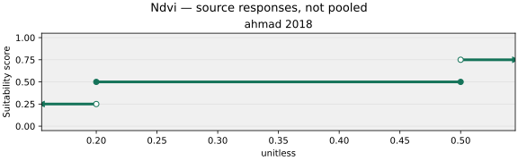
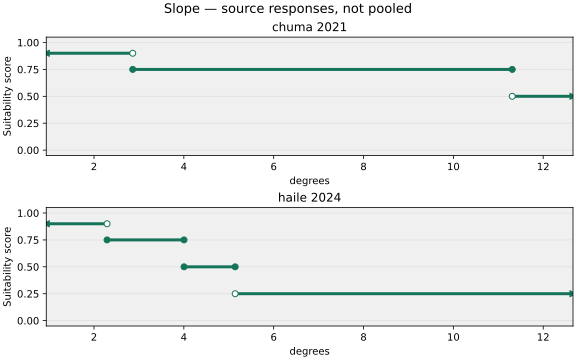
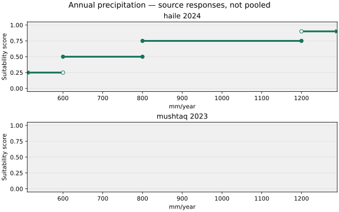
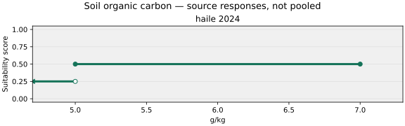
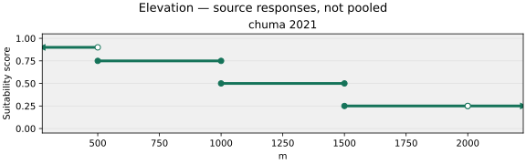
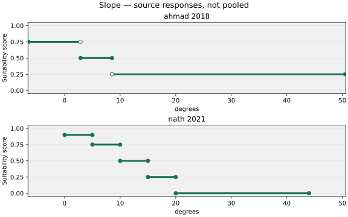
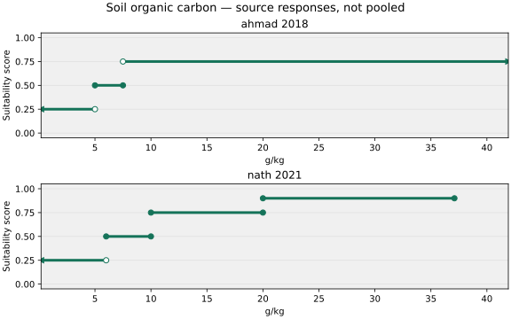
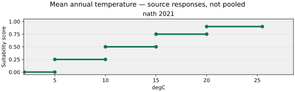
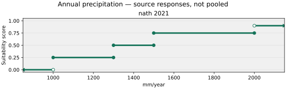
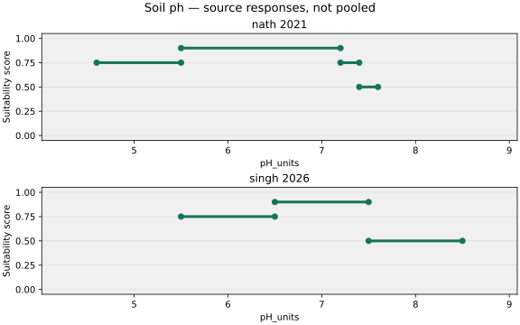

Modules: M1 core suitability + M2b operational feasibility. M2b is required in this analysis but is not added to the core suitability score. This view covers M2b's operational stream; physical-hazard screening still uses T2/T3.
10 numeric rows · 7 host gates · 1 hard exclusion. 8 operational scenarios plus evidence-only operational variables shown as M2b; excluded from core suitability scoring. Configuration ready for inspection; field applicability and pilot execution remain to validate.
Hierarchy: suitability theme → variable group → canonical measurement → dataset. Aliases stay in variables.csv. Related proxies remain separate until context-specific selection; dataset resolution alone does not establish quality. Source importance stays separate from runtime weights.
Numeric rows retain regional source profiles; they are not universal pooled curves. FMNR rainfall remains contextual evidence, without an executable rainfall cutoff. Soil pH/source boundary conflicts remain held. Local inputs: farmland_context, field_boundary_zone, grazing_system_present, managed_forage_without_grazing. Recipe/BIND differences: annual_precipitation, mean_annual_temperature. Read dataset notes before execution. No pilot run performed.
Group inclusion = papers using at least one variable in the group / eligible contributing model papers. Variable inclusion = papers using this variable / the same denominator. A paper counts once even when several group members are used. DOI aliases are deduplicated.
The displayed cohort is general-practice agroforestry models across systems with at least one active, explicitly verified structural or operational input. Both modules use the same paper denominator; group numerators are module-specific. Reviewed n/N uses only human-reviewed records; including pending uses all active verified records. Missing extractions are not recorded use, not confirmed non-use. These are bounded observed-inclusion estimates, not systematic-review prevalence, independent agreement, or weights. Full table extraction is incomplete. Shared model origins can still appear in multiple reporting papers. No family transfer is implied.
Counts, denominator papers, evidence IDs, system/scope breakdowns and variable-within-group estimatesPlots show retained source bands on the common suitability scale, not automatic runtime curves. Open circles exclude endpoints; filled circles include them. Arrows mark unbounded reported tails clipped to the plotting window. Empty regions have no plotted score; overlapping segments remain unresolved. No interpolation is added. A row with a separate default threshold retains that default until a source response is selected.
Numeric defaults are equal (0.2 in current T4). Masks are gates, not weighted votes. Relative importance ratios compare each variable with its study's equal-importance reference; 1 means equal, 2 means twice that reference. Full study denominators and alternative models remain separate. These ratios are not adopted runtime weights.
Standard vocabulary: Agroforestry (NbS) → suitability system → practice. Practice membership shown here is registry membership, not proof every source applies to every listed practice. Unassigned evidence is not automatically planted silvoarable. Haile parklands may be planted or regenerated; Chuma is regional; Ahmad NDVI describes mixed systems. Any planted-system assumption must be a separate sensitivity scenario, preserving original classification.
Full practice vocabularyReadable table CSV · Authoritative T4 snapshot · Every evidence record · Relative importance within studies · Host dataset requirements · Version and hashes
| Module | Theme | Variable group | Group inclusion | System / practices | Variable | Variable inclusion | Rule and evidence | Dataset | Weighting | Use status |
|---|---|---|---|---|---|---|---|---|---|---|
| M1 — Core suitability | biophysical | land cover vegetation | Reviewed: 3/8 (37.5%); Including pending: 3/8 (37.5%) | System not specifiedPractice names and applicabilitySource does not establish a single systemSamastipur regional NDVI classes; no automatic transfer into named systems. NDVI is vegetation greenness, not tree-cover percentage. | NDVI | Reviewed: 3/8 (37.5%); Including pending: 3/8 (37.5%) | Numeric response  Rule and sourcesahmad_2018: < 0.2 unitless: low (score 0.25); 0.2–0.5 unitless: medium (score 0.5); > 0.5 unitless: high (score 0.75) Ahmad, Firoz; Uddin, Md Meraj; Goparaju, Laxmi (2018). Assessment of remote sensing and GIS application in identification of land suitability for agroforestry: A case study of Samastipur, Bihar, India. Contemporary Trends in Geoscience. | mod13q1_ndvi 250 m; Choice and limitationsNo global BIND override; recipe dataset retained Coarser than Sentinel-2; for finer NDVI use Sentinel-2 SR. Cloud contamination in tropics. | Equal numeric default: 0.2. Not a literature-derived weight.Available source-relative importanceDiagnostic models; not all contribute to this row. Alternatives are not independent studies. nath_2021_table2: 0.50 × equal-hierarchy reference Within-study importance ratios | Source response and geographic transfer must be selected; gaps remain unknown; agroforestry system must be specified |
| M1 — Core suitability | biophysical | topographic | Reviewed: 6/8 (75.0%); Including pending: 6/8 (75.0%) | System not specifiedPractice names and applicabilitySource does not establish a single systemDR Congo regional agroforestry response. Source labels gradient Aspects and prints overlapping suitability-index ranges; retain ordinal class meanings only. No automatic transfer into India pool. | Parkland established; planting versus natural retention/regeneration not established. Keep F1/F2 assignment unresolved and exclude from combined planted-system pools. | Terrain slope | Reviewed: 6/8 (75.0%); Including pending: 6/8 (75.0%) | Numeric response  Rule and sourceschuma_2021: < 2.86241 degrees: very high (score 0.9); 2.86241–11.3099 degrees: high (score 0.75); > 11.3099 degrees: moderate (score 0.5) | haile_2024: < 2.29061 degrees: very high (score 0.9); 2.29061–4.00417 degrees: high (score 0.75); 4.00417–5.14276 degrees: medium (score 0.5); > 5.14276 degrees: low (score 0.25) Chuma, Géant Basimine; Cirezi, Nadège Cizungu; Mondo, Jean M.; Mugumaarhahama, Yannick; Ganza, Deckas; Katcho, Karume; Mushagalusa, Gustave Nachigera; Schmitz, Serge (2021). Suitability for agroforestry implementation around Itombwe Natural Reserve (RNI), eastern DR Congo: Application of the Analytical Hierarchy Process (AHP) approach in geographic information system tool. Trees, Forests and People. | Haile, Getachew (2024). Land Suitability Evaluation for Agroforestry Using Geospatial Techniques in Genale Sub-basin Oromia, Ethiopia. Agriculture, Forestry and Fisheries. | srtm_dem_30m 30 m; 2000 Choice and limitations30 m SRTM; derive-then-aggregate for slope. Voids in high-relief terrain. Not for: Engineering design | Equal numeric default: 0.2. Not a literature-derived weight.Available source-relative importanceDiagnostic models; not all contribute to this row. Alternatives are not independent studies. singh_2026_relative_weights: 0.15 × equal-hierarchy reference singh_2026_rf_importance: 0.17 × equal-hierarchy reference nath_2021_table2: 1.50 × equal-hierarchy reference haile_2024_table3: 1.50 × equal-hierarchy reference haile_2024_table5: 1.48 × equal-hierarchy reference Within-study importance ratios | Source response and geographic transfer must be selected; gaps remain unknown; agroforestry system must be specified |
| M1 — Core suitability | biophysical | climatic | Reviewed: 5/8 (62.5%); Including pending: 5/8 (62.5%) | System not specifiedPractice names and applicabilitySource does not establish a single systemParkland established; planting versus natural retention/regeneration not established. Keep F1/F2 assignment unresolved and exclude from combined planted-system pools. | Remove F5 shaded-perennial assignment from this generic rainfall statement. Retain as cross-family secondary context with unresolved score; do not infer a crop-under-shade requirement or use it as an independent numeric response. | Mean annual precipitation | Reviewed: 5/8 (62.5%); Including pending: 5/8 (62.5%) | Numeric response  Rule and sourceshaile_2024: < 600 mm/year: low (score 0.25); 600–800 mm/year: medium (score 0.5); 800–1200 mm/year: high (score 0.75); > 1200 mm/year: very high (score 0.9) | mushtaq_2023: > 1200 mm/year: favourable (score unresolved) Haile, Getachew (2024). Land Suitability Evaluation for Agroforestry Using Geospatial Techniques in Genale Sub-basin Oromia, Ethiopia. Agriculture, Forestry and Fisheries. | Mushtaq, Ruyida; Yadav, Rajesh Kumar; Fayaz, Abida; Ahmed, Pervez; Singh, Harmeet (2023). Multi-criteria land suitability assessment for mulberry-based agroforestry using AHP and GIS approach in Anantnag district of the Kashmir valley, India, to achieve sustainable agriculture. Environment, Development and Sustainability. | chelsa_bioclim_v21_baseline 1000 m; 1981–2010 Choice and limitationsCHELSA v2.1 BIO12 (annual precip) — bias-corrected high-res; preferred over CHIRPS for static climatology.; BIND differs from recipe dataset: resolve in runtime, do not silently substitute units/bands Statistical downscaling from ERA5; may show artefacts in complex terrain. Less validated over Africa and Central Asia. Not for: Short-term weather forecasting or sub-field precision agriculture | Equal numeric default: 0.2. Not a literature-derived weight.Available source-relative importanceDiagnostic models; not all contribute to this row. Alternatives are not independent studies. singh_2026_relative_weights: 0.15 × equal-hierarchy reference singh_2026_rf_importance: 0.15 × equal-hierarchy reference nath_2021_table2: 2.45 × equal-hierarchy reference haile_2024_table3: 0.60 × equal-hierarchy reference haile_2024_table5: 0.53 × equal-hierarchy reference Within-study importance ratios | Source response and geographic transfer must be selected; gaps remain unknown; agroforestry system must be specified; unresolved class scores; reconcile recipe and runtime dataset binding before execution |
| M1 — Core suitability | biophysical | edaphic | Reviewed: 5/8 (62.5%); Including pending: 5/8 (62.5%) | System not specifiedPractice names and applicabilitySource does not establish a single systemParkland established; planting versus natural retention/regeneration not established. Keep F1/F2 assignment unresolved and exclude from combined planted-system pools. | Topsoil organic carbon (0-30 cm) | Reviewed: 3/8 (37.5%); Including pending: 3/8 (37.5%) | Numeric response  Rule and sourceshaile_2024: < 5 g carbon/kg soil: low (score 0.25); 5–7 g carbon/kg soil: medium (score 0.5) Haile, Getachew (2024). Land Suitability Evaluation for Agroforestry Using Geospatial Techniques in Genale Sub-basin Oromia, Ethiopia. Agriculture, Forestry and Fisheries. | isric_soilgrids250_v2 250 m; circa 2000–2015 Choice and limitationsNo global BIND override; recipe dataset retained Prediction uncertainty is high in data-sparse regions (much of sub-Saharan Africa). Point observations biased toward accessible areas. Temporal static — does not capture land-use change effects on soil. Not for: Precision soil management at plot level; nutrient management plans without ground-truthing | Equal numeric default: 0.2. Not a literature-derived weight.Available source-relative importanceDiagnostic models; not all contribute to this row. Alternatives are not independent studies. nath_2021_table2: 1.00 × equal-hierarchy reference haile_2024_table3: 1.75 × equal-hierarchy reference haile_2024_table5: 1.73 × equal-hierarchy reference Within-study importance ratios | Source response and geographic transfer must be selected; gaps remain unknown; agroforestry system must be specified |
| M1 — Core suitability | biophysical | topographic | Reviewed: 6/8 (75.0%); Including pending: 6/8 (75.0%) | System not specifiedPractice names and applicabilitySource does not establish a single systemRegional DR Congo altitude ranking; not globally transferable. Marginal remains low suitability, not exclusion. | Terrain elevation | Reviewed: 0/8 (0.0%); Including pending: 2/8 (25.0%) | Numeric response  Rule and sourceschuma_2021: < 500 m: very high (score 0.9); 500–1000 m: high (score 0.75); 1000–1500 m: moderate (score 0.5); 1500–2000 m: low (score 0.25); > 2000 m: marginal (score 0.25) Chuma, Géant Basimine; Cirezi, Nadège Cizungu; Mondo, Jean M.; Mugumaarhahama, Yannick; Ganza, Deckas; Katcho, Karume; Mushagalusa, Gustave Nachigera; Schmitz, Serge (2021). Suitability for agroforestry implementation around Itombwe Natural Reserve (RNI), eastern DR Congo: Application of the Analytical Hierarchy Process (AHP) approach in geographic information system tool. Trees, Forests and People. | srtm_dem_90m 30 m; 2000 Choice and limitationsNo global BIND override; recipe dataset retained Voids in high-relief areas filled with ASTER or other interpolation methods — check for artefacts. Vegetation canopy not filtered — potential overestimation of elevation under forest cover. Not for: Hydraulic modelling requiring bare-earth DEM; landslide hazard at plot scale | Equal numeric default: 0.2. Not a literature-derived weight.Available source-relative importanceDiagnostic models; not all contribute to this row. Alternatives are not independent studies. nath_2021_table2: 1.50 × equal-hierarchy reference haile_2024_table3: 0.40 × equal-hierarchy reference haile_2024_table5: 0.33 × equal-hierarchy reference Within-study importance ratios | Source response and geographic transfer must be selected; gaps remain unknown; agroforestry system must be specified |
| M1 — Core suitability | biophysical | topographic | Reviewed: 6/8 (75.0%); Including pending: 6/8 (75.0%) | planted silvoarablePractice names and applicabilityAlley cropping; Tree intercropping; Planted boundary / live fence on croplandUse slope and SOC as conditional planted-tree/crop scoping priors. Paper also discusses silvopastoral systems; no automatic F3 response or FMNR transfer. | Use slope, SOC and pH as conditional planted-tree/crop scoping priors. Retain rainfall and temperature only as Eastern Indian Himalayan regional profiles. Do not apply generic climate exclusions to FMNR, or treat tea examples as a crop-specific F5 envelope. | Terrain slope | Reviewed: 6/8 (75.0%); Including pending: 6/8 (75.0%) | Numeric response  Rule and sourcesahmad_2018: < 2.86241 degrees: high (score 0.75); 2.86241–8.53077 degrees: medium (score 0.5); > 8.53077 degrees: low (score 0.25) | nath_2021: 0–5 degrees: very good (score 0.9); 5–10 degrees: good (score 0.75); 10–15 degrees: moderate (score 0.5); 15–20 degrees: marginal (score 0.25); 20–44 degrees: unsuitable (score 0) | Existing default threshold: 19.3; source responses require explicit selection. Ahmad, Firoz; Uddin, Md Meraj; Goparaju, Laxmi (2018). Assessment of remote sensing and GIS application in identification of land suitability for agroforestry: A case study of Samastipur, Bihar, India. Contemporary Trends in Geoscience. | Nath, Arun Jyoti; Kumar, Rakesh; Devi, N. Bijayalaxmi; Pebam, Rocky; Giri, Krishna; Sahoo, Uttam Kumar; Bajpai, Raj Kumar; Sahu, Netrananda; Pandey, Rajiv (2021). Agroforestry land suitability analysis in the Eastern Indian Himalayan region. Environmental Challenges. | Wotlolan, Dean L.; Lowry, John H.; Wales, N.; Glencross, Kevin (2021). Land suitability evaluation for multiple crop agroforestry planning using GIS and multi-criteria decision analysis: A case study in Fiji. Agroforestry Systems. | srtm_dem_30m 30 m; 2000 Choice and limitations30 m SRTM; derive-then-aggregate for slope. Voids in high-relief terrain. Not for: Engineering design | Equal numeric default: 0.2. Not a literature-derived weight.Available source-relative importanceDiagnostic models; not all contribute to this row. Alternatives are not independent studies. singh_2026_relative_weights: 0.15 × equal-hierarchy reference singh_2026_rf_importance: 0.17 × equal-hierarchy reference nath_2021_table2: 1.50 × equal-hierarchy reference haile_2024_table3: 1.50 × equal-hierarchy reference haile_2024_table5: 1.48 × equal-hierarchy reference Within-study importance ratios | Source response and geographic transfer must be selected; gaps remain unknown |
| M1 — Core suitability | biophysical | edaphic | Reviewed: 5/8 (62.5%); Including pending: 5/8 (62.5%) | planted silvoarablePractice names and applicabilityAlley cropping; Tree intercropping; Planted boundary / live fence on croplandUse slope and SOC as conditional planted-tree/crop scoping priors. Paper also discusses silvopastoral systems; no automatic F3 response or FMNR transfer. | Use slope, SOC and pH as conditional planted-tree/crop scoping priors. Retain rainfall and temperature only as Eastern Indian Himalayan regional profiles. Do not apply generic climate exclusions to FMNR, or treat tea examples as a crop-specific F5 envelope. | Topsoil organic carbon (0-30 cm) | Reviewed: 3/8 (37.5%); Including pending: 3/8 (37.5%) | Numeric response  Rule and sourcesahmad_2018: < 5 g carbon/kg soil: low (score 0.25); 5–7.5 g carbon/kg soil: medium (score 0.5); > 7.5 g carbon/kg soil: high (score 0.75) | nath_2021: < 6 g carbon/kg soil: marginal (score 0.25); 6–10 g carbon/kg soil: moderate (score 0.5); 10–20 g carbon/kg soil: good (score 0.75); 20–37.1 g carbon/kg soil: very good (score 0.9) Ahmad, Firoz; Uddin, Md Meraj; Goparaju, Laxmi (2018). Assessment of remote sensing and GIS application in identification of land suitability for agroforestry: A case study of Samastipur, Bihar, India. Contemporary Trends in Geoscience. | Nath, Arun Jyoti; Kumar, Rakesh; Devi, N. Bijayalaxmi; Pebam, Rocky; Giri, Krishna; Sahoo, Uttam Kumar; Bajpai, Raj Kumar; Sahu, Netrananda; Pandey, Rajiv (2021). Agroforestry land suitability analysis in the Eastern Indian Himalayan region. Environmental Challenges. | isric_soilgrids250_v2 250 m; circa 2000–2015 Choice and limitationsNo global BIND override; recipe dataset retained Prediction uncertainty is high in data-sparse regions (much of sub-Saharan Africa). Point observations biased toward accessible areas. Temporal static — does not capture land-use change effects on soil. Not for: Precision soil management at plot level; nutrient management plans without ground-truthing | Equal numeric default: 0.2. Not a literature-derived weight.Available source-relative importanceDiagnostic models; not all contribute to this row. Alternatives are not independent studies. nath_2021_table2: 1.00 × equal-hierarchy reference haile_2024_table3: 1.75 × equal-hierarchy reference haile_2024_table5: 1.73 × equal-hierarchy reference Within-study importance ratios | Source response and geographic transfer must be selected; gaps remain unknown |
| M1 — Core suitability | biophysical | climatic | Reviewed: 5/8 (62.5%); Including pending: 5/8 (62.5%) | planted silvoarablePractice names and applicabilityAlley cropping; Tree intercropping; Planted boundary / live fence on croplandUse slope, SOC and pH as conditional planted-tree/crop scoping priors. Retain rainfall and temperature only as Eastern Indian Himalayan regional profiles. Do not apply generic climate exclusions to FMNR, or treat tea examples as a crop-specific F5 envelope. | Mean annual temperature | Reviewed: 4/8 (50.0%); Including pending: 4/8 (50.0%) | Numeric response  Rule and sourcesnath_2021: ≤ 5 °C: unsuitable (score 0); 5–10 °C: marginal (score 0.25); 10–15 °C: moderate (score 0.5); 15–20 °C: good (score 0.75); 20–25.5 °C: very good (score 0.9) Nath, Arun Jyoti; Kumar, Rakesh; Devi, N. Bijayalaxmi; Pebam, Rocky; Giri, Krishna; Sahoo, Uttam Kumar; Bajpai, Raj Kumar; Sahu, Netrananda; Pandey, Rajiv (2021). Agroforestry land suitability analysis in the Eastern Indian Himalayan region. Environmental Challenges. | chelsa_bioclim_v21_baseline 1000 m; 1981–2010 Choice and limitationsCHELSA BIO1 = annual mean temperature; multi-band asset, band-resolved via this binding.; BIND differs from recipe dataset: resolve in runtime, do not silently substitute units/bands Statistical downscaling from ERA5; may show artefacts in complex terrain. Less validated over Africa and Central Asia. Not for: Short-term weather forecasting or sub-field precision agriculture | Equal numeric default: 0.2. Not a literature-derived weight.Available source-relative importanceDiagnostic models; not all contribute to this row. Alternatives are not independent studies. singh_2026_relative_weights: 0.61 × equal-hierarchy reference singh_2026_rf_importance: 0.55 × equal-hierarchy reference nath_2021_table2: 2.45 × equal-hierarchy reference Within-study importance ratios | Source response and geographic transfer must be selected; gaps remain unknown; reconcile recipe and runtime dataset binding before execution |
| M1 — Core suitability | biophysical | climatic | Reviewed: 5/8 (62.5%); Including pending: 5/8 (62.5%) | planted silvoarablePractice names and applicabilityAlley cropping; Tree intercropping; Planted boundary / live fence on croplandUse slope, SOC and pH as conditional planted-tree/crop scoping priors. Retain rainfall and temperature only as Eastern Indian Himalayan regional profiles. Do not apply generic climate exclusions to FMNR, or treat tea examples as a crop-specific F5 envelope. | Mean annual precipitation | Reviewed: 5/8 (62.5%); Including pending: 5/8 (62.5%) | Numeric response  Rule and sourcesnath_2021: < 1000 mm/year: unsuitable (score 0); 1000–1300 mm/year: marginal (score 0.25); 1300–1500 mm/year: moderate (score 0.5); 1500–2000 mm/year: good (score 0.75); > 2000 mm/year: very good (score 0.9) Nath, Arun Jyoti; Kumar, Rakesh; Devi, N. Bijayalaxmi; Pebam, Rocky; Giri, Krishna; Sahoo, Uttam Kumar; Bajpai, Raj Kumar; Sahu, Netrananda; Pandey, Rajiv (2021). Agroforestry land suitability analysis in the Eastern Indian Himalayan region. Environmental Challenges. | chelsa_bioclim_v21_baseline 1000 m; 1981–2010 Choice and limitationsCHELSA v2.1 BIO12 (annual precip) — bias-corrected high-res; preferred over CHIRPS for static climatology.; BIND differs from recipe dataset: resolve in runtime, do not silently substitute units/bands Statistical downscaling from ERA5; may show artefacts in complex terrain. Less validated over Africa and Central Asia. Not for: Short-term weather forecasting or sub-field precision agriculture | Equal numeric default: 0.2. Not a literature-derived weight.Available source-relative importanceDiagnostic models; not all contribute to this row. Alternatives are not independent studies. singh_2026_relative_weights: 0.15 × equal-hierarchy reference singh_2026_rf_importance: 0.15 × equal-hierarchy reference nath_2021_table2: 2.45 × equal-hierarchy reference haile_2024_table3: 0.60 × equal-hierarchy reference haile_2024_table5: 0.53 × equal-hierarchy reference Within-study importance ratios | Source response and geographic transfer must be selected; gaps remain unknown; reconcile recipe and runtime dataset binding before execution |
| M1 — Core suitability | biophysical | edaphic | Reviewed: 5/8 (62.5%); Including pending: 5/8 (62.5%) | planted silvoarablePractice names and applicabilityAlley cropping; Tree intercropping; Planted boundary / live fence on croplandUse slope, SOC and pH as conditional planted-tree/crop scoping priors. Retain rainfall and temperature only as Eastern Indian Himalayan regional profiles. Do not apply generic climate exclusions to FMNR, or treat tea examples as a crop-specific F5 envelope. | Retain F1 pH assignment for planted trees with crops. Boundary component still needs F4 geometry; no numeric-only expansion into F4 or homegardens. Pool pH with Nath as an India-derived scoping prior, retaining uncertainty and regional profiles. | Topsoil pH (0-30 cm) | Reviewed: 3/8 (37.5%); Including pending: 3/8 (37.5%) | Numeric response  Rule and sourcesnath_2021: 4.6–5.5 pH: good (score 0.75); 5.5–7.2 pH: very good (score 0.9); 7.2–7.4 pH: good (score 0.75); 7.4–7.6 pH: moderate (score 0.5) | singh_2026: 5.5–6.5 pH: high (score 0.75); 6.5–7.5 pH: very high (score 0.9); 7.5–8.5 pH: moderate (score 0.5) Nath, Arun Jyoti; Kumar, Rakesh; Devi, N. Bijayalaxmi; Pebam, Rocky; Giri, Krishna; Sahoo, Uttam Kumar; Bajpai, Raj Kumar; Sahu, Netrananda; Pandey, Rajiv (2021). Agroforestry land suitability analysis in the Eastern Indian Himalayan region. Environmental Challenges. | Singh, R. et al. (2026). Scaling agroforestry land suitability analysis in Odisha, India: a machine learning approach. Frontiers in Remote Sensing. | isric_soilgrids250_v2 250 m; circa 2000–2015 Choice and limitationsNo global BIND override; recipe dataset retained Prediction uncertainty is high in data-sparse regions (much of sub-Saharan Africa). Point observations biased toward accessible areas. Temporal static — does not capture land-use change effects on soil. Not for: Precision soil management at plot level; nutrient management plans without ground-truthing | Equal numeric default: 0.2. Not a literature-derived weight.Available source-relative importanceDiagnostic models; not all contribute to this row. Alternatives are not independent studies. singh_2026_relative_weights: 0.45 × equal-hierarchy reference singh_2026_rf_importance: 0.48 × equal-hierarchy reference nath_2021_table2: 1.00 × equal-hierarchy reference haile_2024_table3: 1.75 × equal-hierarchy reference haile_2024_table5: 1.73 × equal-hierarchy reference Within-study importance ratios | Source response and geographic transfer must be selected; gaps remain unknown |
| M1 — Core suitability | operational | governance | Reviewed: No verified model-use record; Including pending: No verified model-use record | planted silvoarablePractice names and applicabilityAlley cropping; Tree intercropping; Planted boundary / live fence on cropland | Protected-area status (IUCN category) | Reviewed: No verified model-use record; Including pending: No verified model-use record | Hard exclusionRule and sourcesStrict nature reserves (IUCN I–II) prohibit agricultural intervention including agroforestry. Hard exclusion required regardless of biophysical suitability. Chuma et al. (2021) use the Itombwe Nature Reserve boundary as a hard exclusion layer in DR Congo agroforestry suitability mapping. Pinto et al. (2019) use protected area boundaries as planning zones in Montado conservation prioritisation. Design/policy configuration | protected_areas_wdpa m; Updated monthly Choice and limitationsNo global BIND override; recipe dataset retained Boundary data quality varies by country. Some protected areas are paper parks with little enforcement. Does not capture community conserved areas (OECMs) comprehensively. Not for: Legal compliance decisions; site-level permitting | Mask, not additive weight No reconstructed within-study ratio for this variable. Within-study importance ratios | Legal-mask adapter and family coverage unresolved; not executable through categorical host evaluator |
| M2b — Operational feasibility | operational | socio economic | Reviewed: 0/8 (0.0%); Including pending: 3/8 (37.5%) | planted silvoarablePractice names and applicabilityAlley cropping; Tree intercropping; Planted boundary / live fence on cropland | Travel time to large city/market | Reviewed: No verified model-use record; Including pending: No verified model-use record Retained evidence: 2 papers / 2 records Related evidence across contextshaglund_2011; marinis_2022: ev_T4_accesstraveltime_marinis22_1; ev_accessibility_travel_time_haglund11_1Related evidence is not automatically support for a configured scenario or proof of model inclusion. | Operational scenarioRule and sourcesM2b Stream-B operational lever (v0.3.0). Scenario candidate — TTL toggles in M4 to see how investment-addressable enabling-environment improvements expand the opportunity space. Filter/flag, never summed. Design/policy configuration | nelson_accessibility_2015 1000 m; Choice and limitationsWeiss/Nelson 2015 baseline ~1 km global accessibility surface. Travel-time minutes. Road network from OSM ~2016; coverage variable in remote regions; not updated for post-2016 infrastructure. | Operational scenario default: 0.1 No reconstructed within-study ratio for this variable. Within-study importance ratios | Outside core suitability |
| M2b — Operational feasibility | operational | socio economic | Reviewed: 0/8 (0.0%); Including pending: 3/8 (37.5%) | planted silvoarablePractice names and applicabilityAlley cropping; Tree intercropping; Planted boundary / live fence on cropland | Electrification / night-lights index | Reviewed: No verified model-use record; Including pending: No verified model-use record | Operational scenarioRule and sourcesM2b Stream-B operational lever (v0.3.0). Scenario candidate — TTL toggles in M4 to see how investment-addressable enabling-environment improvements expand the opportunity space. Filter/flag, never summed. Design/policy configuration | viirs_nighttime_lights 500 m; Choice and limitationsVIIRS annual night-lights composite at ~500 m as electrification proxy. Proxy only — captures lit pavement + industrial flaring, not domestic-only electrification. | Operational scenario default: 0.1 No reconstructed within-study ratio for this variable. Within-study importance ratios | Outside core suitability |
| M2b — Operational feasibility | operational | socio economic | Reviewed: 0/8 (0.0%); Including pending: 3/8 (37.5%) | planted silvoarablePractice names and applicabilityAlley cropping; Tree intercropping; Planted boundary / live fence on cropland | Land tenure security (formal + customary, incl. IPLC) | Reviewed: No verified model-use record; Including pending: No verified model-use record Retained evidence: 19 papers / 21 records Related evidence across contextsabasse_2023_fmnr_niger_state_of_knowledge; binam_2017; castle_2025; castle_sr_2021; chaudhury_2011_icraf_wp_zambia_honduras; crs_fmnr_niger_2025; fao_anr_2019; fesenmyer_2025; haverhals_2016; ijbcs_rna_mali_2020; kiziridis_2026; lasco_2014; lohbeck_2020; morantes_2018_es; ribeiro_2022_pt; singh_2024; wocat_1358_2017; wotlolan_2021; wri_regreening_2015: EV_binam_2017_007; EV_crs_fmnr_niger_2025_003; EV_crs_fmnr_niger_2025_004; EV_crs_fmnr_niger_2025_005; EV_fao_anr_2019_005; EV_ijbcs_rna_mali_2020_006; EV_lohbeck_2020_016; EV_wocat_1358_2017_016; EV_wri_regreening_2015_013; ev_T4_tenure_singh24_1; ev_T4_tenure_wotlolan2021_1; ev_t4_tenure_castle2025_1; ev_t4_tenure_kizir_1; ev_tenure_security_abasse23_1; ev_tenure_security_castle21_1; ev_tenure_security_chaudhury11_1; ev_tenure_security_fesenmyer25_1; ev_tenure_security_haverhals16_1; ev_tenure_security_lasco14_1; ev_tenure_security_moran18_12; ev_tenure_security_ribeiro22_4Related evidence is not automatically support for a configured scenario or proof of model inclusion. | Operational scenarioRule and sourcesM2b Stream-B operational lever (v0.3.0). Scenario candidate — TTL toggles in M4 to see how investment-addressable enabling-environment improvements expand the opportunity space. Filter/flag, never summed. Design/policy configuration | landmark_iplc_lands m; Choice and limitationsLandMark IPLC vector layer. FPIC_REQUIRED flag triggers on overlap with the M1 opportunity-space mask. Coverage patchy — absence ≠ no IPLC presence. Coverage is patchy — only countries where IPLC mapping is documented; absence ≠ no IPLC presence. | Operational scenario default: 0.1 No reconstructed within-study ratio for this variable. Within-study importance ratios | Outside core suitability |
| M2b — Operational feasibility | operational | socio economic | Reviewed: 0/8 (0.0%); Including pending: 3/8 (37.5%) | planted silvoarablePractice names and applicabilityAlley cropping; Tree intercropping; Planted boundary / live fence on cropland | Conflict / fragility index | Reviewed: No verified model-use record; Including pending: No verified model-use record | Operational scenarioRule and sourcesM2b Stream-B operational lever (v0.3.0). Scenario candidate — TTL toggles in M4 to see how investment-addressable enabling-environment improvements expand the opportunity space. Filter/flag, never summed. Design/policy configuration | acled_conflict_events m; Choice and limitationsACLED rolling 5-year event-density grid; pair with WB FCV admin0 list for binary fragility flag. Event detection bias (media-coverage-dependent); under-reporting in less-mediated conflicts. | Operational scenario default: 0.1 No reconstructed within-study ratio for this variable. Within-study importance ratios | Outside core suitability |
| M2b — Operational feasibility | operational | socio economic | Reviewed: 0/8 (0.0%); Including pending: 3/8 (37.5%) | planted silvoarablePractice names and applicabilityAlley cropping; Tree intercropping; Planted boundary / live fence on cropland | Extension service + governance quality | Reviewed: No verified model-use record; Including pending: No verified model-use record Retained evidence: 15 papers / 20 records Related evidence across contextscastle_2025; castle_sr_2021; chaudhury_2011_icraf_wp_zambia_honduras; cisneros_2024_es; coulibaly_2016_icraf_wp223; crs_fmnr_niger_2025; diasfilho_2008_pt; haglund_2011; ijbcs_rna_mali_2020; kiziridis_2026; lohbeck_2020; ribeiro_2022_pt; singh_2024; stubblefield_2026; wri_regreening_2015: EV_crs_fmnr_niger_2025_006; EV_crs_fmnr_niger_2025_007; EV_crs_fmnr_niger_2025_008; EV_crs_fmnr_niger_2025_009; EV_crs_fmnr_niger_2025_010; EV_crs_fmnr_niger_2025_011; EV_ijbcs_rna_mali_2020_003; EV_lohbeck_2020_017; EV_wri_regreening_2015_014; ev_T4_extgov_singh24_1; ev_extension_governance_castle21_2; ev_extension_governance_chaudhury11_1; ev_extension_governance_cisneros24_1; ev_extension_governance_coulibaly16_1; ev_extension_governance_diasf08_7; ev_extension_governance_haglund11_1; ev_extension_governance_ribeiro22_3; ev_extension_governance_stubble26_1; ev_t4_ext_kizir_1; ev_t4_extension_castle2025_1Related evidence is not automatically support for a configured scenario or proof of model inclusion. | Operational scenarioRule and sourcesM2b Stream-B operational lever (v0.3.0). Scenario candidate — TTL toggles in M4 to see how investment-addressable enabling-environment improvements expand the opportunity space. Filter/flag, never summed. Design/policy configuration | wb_wgi_governance m; Choice and limitationsWB WGI 'government effectiveness' (admin0). Per the T5 spatial-grain rule (admin0 → qualified flag, not hotspot driver). Subnational requires_upload. Country-level only; no subnational variation — qualified-flag-only for in-country MCDA differentiation (per T5 spatial-grain rule). | Operational scenario default: 0.1 No reconstructed within-study ratio for this variable. Within-study importance ratios | Outside core suitability |
| M2b — Operational feasibility | operational | socio economic | Reviewed: 0/8 (0.0%); Including pending: 3/8 (37.5%) | planted silvoarablePractice names and applicabilityAlley cropping; Tree intercropping; Planted boundary / live fence on cropland | Rural finance / credit / project density | Reviewed: No verified model-use record; Including pending: No verified model-use record Retained evidence: 10 papers / 10 records Related evidence across contextscastle_2025; castle_sr_2021; coulibaly_2016_icraf_wp223; diasfilho_2008_pt; ferraz_2024_pt; ijbcs_rna_mali_2020; murgueitio_2013_es; thorlakson_2012_af_vulnerability_kenya; unger_2023; wocat_1358_2017: EV_ijbcs_rna_mali_2020_004; EV_wocat_1358_2017_017; ev_T4_fin_unger2023_1; ev_finance_credit_access_castle21_1; ev_finance_credit_access_coulibaly16_1; ev_finance_credit_access_diasf08_5; ev_finance_credit_access_ferraz24_10; ev_finance_credit_access_murg13_3; ev_finance_credit_access_thorlak12_1; ev_t4_finance_castle2025_2Related evidence is not automatically support for a configured scenario or proof of model inclusion. | Operational scenarioRule and sourcesM2b Stream-B operational lever (v0.3.0). Scenario candidate — TTL toggles in M4 to see how investment-addressable enabling-environment improvements expand the opportunity space. Filter/flag, never summed. Design/policy configuration | wb_findex_access m; Choice and limitationsWB Global Findex (admin0). Subnational requires_upload via LSMS-ISA / FinScope. Survey-based, country-level only; subnational requires_upload. | Operational scenario default: 0.1 No reconstructed within-study ratio for this variable. Within-study importance ratios | Outside core suitability |
| M2b — Operational feasibility | operational | socio economic | Reviewed: 0/8 (0.0%); Including pending: 3/8 (37.5%) | planted silvoarablePractice names and applicabilityAlley cropping; Tree intercropping; Planted boundary / live fence on cropland | Market / value-chain depth | Reviewed: No verified model-use record; Including pending: No verified model-use record Retained evidence: 8 papers / 8 records Related evidence across contextscastle_2025; castle_sr_2021; chuma_2021; fao_2024_senegal_fr; moisa_2025; palma_2007; singh_2024; thorlakson_2012_af_vulnerability_kenya: ev_T4_market_singh24_1; ev_T4_market_value_chain_chuma21_1; ev_market_value_chain_castle21_1; ev_market_value_chain_faosen24_19; ev_market_value_chain_thorlak12_1; ev_t4_market_castle2025_1; ev_t4_market_moisa25_1; ev_t4_market_palma2007_01Related evidence is not automatically support for a configured scenario or proof of model inclusion. | Operational scenarioRule and sourcesM2b Stream-B operational lever (v0.3.0). Scenario candidate — TTL toggles in M4 to see how investment-addressable enabling-environment improvements expand the opportunity space. Filter/flag, never summed. Design/policy configuration | faostat_country_indicators m; Choice and limitationsFAOSTAT country indicators (producer prices + trade) as market-depth proxy. Subnational requires country uploads. Admin0 granularity; subnational variation invisible. | Operational scenario default: 0.1 No reconstructed within-study ratio for this variable. Within-study importance ratios | Outside core suitability |
| M2b — Operational feasibility | operational | socio economic | Reviewed: 0/8 (0.0%); Including pending: 3/8 (37.5%) | planted silvoarablePractice names and applicabilityAlley cropping; Tree intercropping; Planted boundary / live fence on cropland | Seasonal rural labour availability | Reviewed: No verified model-use record; Including pending: No verified model-use record Retained evidence: 12 papers / 17 records Related evidence across contextscastle_2025; crs_fmnr_niger_2025; diasfilho_2008_pt; fao_2024_senegal_fr; fao_anr_2019; kiziridis_2026; maliki_2012_econ; morantes_2018_es; snapp_2010_econ; stubblefield_2026; wocat_507_2019; wotlolan_2021: EV_crs_fmnr_niger_2025_012; EV_crs_fmnr_niger_2025_013; EV_crs_fmnr_niger_2025_014; EV_fao_anr_2019_004; EV_wocat_507_2019_014; ev_T4_labour_wotlolan2021_1; ev_labour_availability_diasf08_6; ev_labour_availability_faosen24_18; ev_labour_availability_maliki12_1; ev_labour_availability_moran18_13; ev_labour_availability_snapp10_1; ev_labour_availability_snapp10_2; ev_labour_availability_stubble26_1; ev_labour_availability_wocat_507_2019_workload; ev_t4_labour_castle2025_1; ev_t4_labour_kizir_1; ev_t4_labour_kizir_2Related evidence is not automatically support for a configured scenario or proof of model inclusion. | Operational scenarioRule and sourcesM2b Stream-B operational lever (v0.3.0). Scenario candidate — TTL toggles in M4 to see how investment-addressable enabling-environment improvements expand the opportunity space. Filter/flag, never summed. Design/policy configuration | ilo_labour_statistics m; Choice and limitationsILOSTAT agricultural employment share. Subnational requires LSMS-ISA or country uploads. Country-level only; subnational variation requires LSMS-ISA or country uploads. | Operational scenario default: 0.1 No reconstructed within-study ratio for this variable. Within-study importance ratios | Outside core suitability |
| M1 — Core suitability | system | land use | Reviewed: 2/8 (25.0%); Including pending: 2/8 (25.0%) | planted silvoarablePractice names and applicabilityAlley cropping; Tree intercropping; Planted boundary / live fence on cropland | Land cover / land use class | Reviewed: 2/8 (25.0%); Including pending: 2/8 (25.0%) | Categorical host gateRule and sourcesEvidence-backed categorical gate. Castle Table 2 (PDF p8) defines alley cropping on annual cropland or forage grown between tree rows without grazing, excluding existing tree crops. WorldCover 40 maps annual cropland. WorldCover 30 is conditional on a verified managed-forage/non-grazing mask; it is not treated as pasture proof. Built-up, permanent snow/ice and permanent water cannot satisfy this host definition. Tree/shrub cover remains unknown because those classes mix farms and non-farms. Castle, Sarah; Miller, Daniel C.; Wardropper, Chloe B. (2025). Mapping the social-ecological suitability of agroforestry in the US Midwest. Environmental Research Letters. | esa_worldcover_2021 10 m; 2021 Choice and limitationsNo global BIND override; recipe dataset retained Mixed-pixel confusion in fragmented agricultural landscapes. Annual snapshot — does not capture seasonal cultivation. Accuracy lower in arid landscapes and under cloud cover. Not for: Crop-type mapping; sub-field land use classification | Mask, not additive weight No reconstructed within-study ratio for this variable. Within-study importance ratios | Configured; requires aligned inputs |
| M1 — Core suitability | system | land use | Reviewed: 2/8 (25.0%); Including pending: 2/8 (25.0%) | regeneration farmlandPractice names and applicabilityFarmer-managed natural regeneration (FMNR); Parkland tree retention; Assisted natural regeneration on farmland | Land cover / land use class | Reviewed: 2/8 (25.0%); Including pending: 2/8 (25.0%) | Categorical host gateRule and sourcesEvidence-backed categorical gate. WOCAT 507 describes restoring degraded wasteland and improving depleted farmland (Kenya example, PDF p1). Within the regeneration-on-farmland family, WorldCover alone cannot identify degradation or farmland history. Positive classes require observed depleted/degraded farmland masks; bare soil alone is never evidence of restoration potential. This gate establishes land-use compatibility, not regeneration success or rootstock presence. Tree cover remains unresolved. Pete input review 2026-10-20: depletion/degradation are targeting context; non-cropland requires farmland identity. WOCAT (2019). Farmer Managed Natural Regeneration (FMNR). WOCAT SLM Technologies Database, Technology 507 (Kenya). Compiler: T. Kalytta; ed. I. Ojuok et al. | esa_worldcover_2021 10 m; 2021 Choice and limitationsNo global BIND override; recipe dataset retained Mixed-pixel confusion in fragmented agricultural landscapes. Annual snapshot — does not capture seasonal cultivation. Accuracy lower in arid landscapes and under cloud cover. Not for: Crop-type mapping; sub-field land use classification | Mask, not additive weight No reconstructed within-study ratio for this variable. Within-study importance ratios | Configured; requires aligned inputs |
| M1 — Core suitability | system | land use | Reviewed: 2/8 (25.0%); Including pending: 2/8 (25.0%) | silvopastoralPractice names and applicabilityPlanted silvopasture; Agrosilvopasture | Land cover / land use class | Reviewed: 2/8 (25.0%); Including pending: 2/8 (25.0%) | Categorical host gateRule and sourcesEvidence-backed categorical gate. Castle Table 2 (PDF p8) defines trees integrated with forage and grazing animals on pasture/grassland. WorldCover grassland requires independent grazing-system confirmation. Other vegetation classes remain unresolved because they may mix wooded pasture, natural vegetation and other systems. Supporting evidence remains held by Pete; default execution returns pending_evidence_review until that review is resolved. Pete clarification 2026-10-20: GPW cultivated or natural/semi-natural grassland plus local grazing confirmation; no GLW substitute. Castle, Sarah; Miller, Daniel C.; Wardropper, Chloe B. (2025). Mapping the social-ecological suitability of agroforestry in the US Midwest. Environmental Research Letters. | gpw_grassland_class_v1 30 m; 2000-2022; select 2020 for GLW4 alignment Choice and limitationsNo global BIND override; recipe dataset retained Known regional underprediction and cropland confusion. Cultivated class includes managed forage; grazing needs independent confirmation. | Mask, not additive weight No reconstructed within-study ratio for this variable. Within-study importance ratios | Configured; requires aligned inputs |
| M1 — Core suitability | system | land use | Reviewed: 2/8 (25.0%); Including pending: 2/8 (25.0%) | linear boundaryPractice names and applicabilityWindbreaks & shelterbelts; Contour & vegetative buffers | Land cover / land use class | Reviewed: 2/8 (25.0%); Including pending: 2/8 (25.0%) | Categorical host gateRule and sourcesCandidate applicability gate for windbreaks/shelterbelts only. Castle Table 2 PDF p8 places windbreaks on delineated cropland/pasture field boundaries in the US Midwest. WorldCover cropland requires independently mapped field-boundary placement; grassland additionally requires managed pasture confirmation. No universal buffer width or contour-siting rule is inferred. Report applicability zones and candidate line length, never eligible pixel area as planting footprint. Source and cross-context mapping remain pending review. Pete Steward approved B1 on 2026-10-20: boundary geometry required; buffer width varies by publications and regions. Field delineation may be less available in African extensive systems; missing geometry remains unknown. Pete input review 2026-10-20: field boundaries required for both cropland and pasture; no separate pasture-management gate. Castle, Sarah; Miller, Daniel C.; Wardropper, Chloe B. (2025). Mapping the social-ecological suitability of agroforestry in the US Midwest. Environmental Research Letters. | esa_worldcover_2021 10 m; 2021 Choice and limitationsNo global BIND override; recipe dataset retained Mixed-pixel confusion in fragmented agricultural landscapes. Annual snapshot — does not capture seasonal cultivation. Accuracy lower in arid landscapes and under cloud cover. Not for: Crop-type mapping; sub-field land use classification | Mask, not additive weight No reconstructed within-study ratio for this variable. Within-study importance ratios | Configured; requires aligned inputs |
| M1 — Core suitability | system | land use | Reviewed: 2/8 (25.0%); Including pending: 2/8 (25.0%) | shaded perennialPractice names and applicabilityShaded perennial-crop system | Land cover / land use class | Reviewed: 2/8 (25.0%); Including pending: 2/8 (25.0%) | Categorical host gateRule and sourcesPete Steward approved P1 on 2026-10-20: shade agroforestry requires a suitable host crop; OR across crops. Prefer accurate commodity distributions; crop fraction per pixel from MapSPAM is acceptable for high-level scoping. Positive crop fraction establishes host presence, not suitability strength. Retain fractions; no full-pixel area or unverified overlap sum. Source evidence identifies coffee/cocoa systems, not a numeric suitability threshold. No niche-model substitution. Jezeer et al. (2017). Shaded Coffee and Cocoa – Double Dividend for Biodiversity and Small-scale Farmers. Ecological Economics. | esa_worldcover_2021 10 m; 2021 Choice and limitationsNo global BIND override; recipe dataset retained Mixed-pixel confusion in fragmented agricultural landscapes. Annual snapshot — does not capture seasonal cultivation. Accuracy lower in arid landscapes and under cloud cover. Not for: Crop-type mapping; sub-field land use classification | Mask, not additive weight No reconstructed within-study ratio for this variable. Within-study importance ratios | Configured; requires aligned inputs |
| M1 — Core suitability | system | land use | Reviewed: 2/8 (25.0%); Including pending: 2/8 (25.0%) | shaded perennialPractice names and applicabilityShaded perennial-crop system | Land cover / land use class | Reviewed: 2/8 (25.0%); Including pending: 2/8 (25.0%) | Categorical host gateRule and sourcesPete Steward approved P1 on 2026-10-20: shade agroforestry requires a suitable host crop; OR across crops. Prefer accurate commodity distributions; crop fraction per pixel from MapSPAM is acceptable for high-level scoping. Positive crop fraction establishes host presence, not suitability strength. Retain fractions; no full-pixel area or unverified overlap sum. Source evidence identifies coffee/cocoa systems, not a numeric suitability threshold. No niche-model substitution. Jezeer et al. (2017). Shaded Coffee and Cocoa – Double Dividend for Biodiversity and Small-scale Farmers. Ecological Economics. | esa_worldcover_2021 10 m; 2021 Choice and limitationsNo global BIND override; recipe dataset retained Mixed-pixel confusion in fragmented agricultural landscapes. Annual snapshot — does not capture seasonal cultivation. Accuracy lower in arid landscapes and under cloud cover. Not for: Crop-type mapping; sub-field land use classification | Mask, not additive weight No reconstructed within-study ratio for this variable. Within-study importance ratios | Configured; requires aligned inputs |
| M1 — Core suitability | system | land use | Reviewed: 2/8 (25.0%); Including pending: 2/8 (25.0%) | shaded perennialPractice names and applicabilityShaded perennial-crop system | Land cover / land use class | Reviewed: 2/8 (25.0%); Including pending: 2/8 (25.0%) | Categorical host gateRule and sourcesPete Steward approved P1 on 2026-10-20: shade agroforestry requires a suitable host crop; OR across crops. Prefer accurate commodity distributions; crop fraction per pixel from MapSPAM is acceptable for high-level scoping. Positive crop fraction establishes host presence, not suitability strength. Retain fractions; no full-pixel area or unverified overlap sum. Source evidence identifies coffee/cocoa systems, not a numeric suitability threshold. No niche-model substitution. Tea added by explicit Pete Steward design decision, not inferred from Jezeer coffee/cocoa evidence. This gate establishes host presence only; crop-specific shade response still requires separate evidence. Jezeer et al. (2017). Shaded Coffee and Cocoa – Double Dividend for Biodiversity and Small-scale Farmers. Ecological Economics. | esa_worldcover_2021 10 m; 2021 Choice and limitationsNo global BIND override; recipe dataset retained Mixed-pixel confusion in fragmented agricultural landscapes. Annual snapshot — does not capture seasonal cultivation. Accuracy lower in arid landscapes and under cloud cover. Not for: Crop-type mapping; sub-field land use classification | Mask, not additive weight No reconstructed within-study ratio for this variable. Within-study importance ratios | Configured; requires aligned inputs |
| M2b — Operational feasibility | operational | socio economic | Reviewed: 0/8 (0.0%); Including pending: 3/8 (37.5%) | Multiple source contexts; no common applicability assumedPractice names and applicabilitySource does not establish a single system | Adoption / uptake rate | Reviewed: No verified model-use record; Including pending: No verified model-use record Retained evidence: 9 papers / 11 records Related evidence across contextsalemu_spia_ethiopia_2024; buritica_caqueta_silvopasture_brief_2024; crs_regreening_cost_efficiency_2023; mutenje_2021_ccafs_csa_adaptation; place_2005_ifpri_rr142; santos_2025_pt; snapp_2010_econ; thorlakson_2012_af_vulnerability_kenya; wv_fmnr_evidence_of_impact_2019: ev_adoption_rate_bur24_3; ev_adoption_rate_crs23_6; ev_adoption_rate_crs23_7; ev_adoption_rate_mutenje21_1; ev_adoption_rate_mutenje21_2; ev_adoption_rate_place05_7; ev_adoption_rate_santos25_11; ev_adoption_rate_snapp10_1; ev_adoption_rate_spia24_1; ev_adoption_rate_thorlak12_1; ev_adoption_rate_wvfmnr19_13Related evidence is not automatically support for a configured scenario or proof of model inclusion. | Operational evidence (not configured)Rule and sources11 active evidence records retained. No executable curve or scenario weight is inferred. Inspect evidence IDs and source contexts. Alemu, S., Ambel, A., Khanal, A., Kosmowski, F., Stevenson, J.R., Taye, L., Tsegay, A., Macours, K. (2024). SPIA Ethiopia Report 2024: Building Resilience to Shocks. CGIAR Standing Panel on Impact Assessment. | Buriticá, A., Ngaiwi, M., Moreno, M., Castro-Núñez, A., González, C., Urbani, I. (2024). Assessing the impact of silvo-pastoral systems in the Colombian Amazon piedmont. Impact Brief Series #1. Alliance of Bioversity International and CIAT. | Catholic Relief Services (CRS), with World Vision, ICRAF and IRC (2023). Regreening Africa 2023 (Ghana & Rwanda) Cost-Efficiency Analysis, March 2023 (Dioptra case study). | Mutenje, M.J. (2021). Assessment of the evidence base on adaptation benefits of CSA options across timescales and geographies in West Africa. CCAFS report (EU-IFAD). | Research Institute (IFPRI) (2005). The impact of agroforestry-based soil fertility replenishment practices on the poor in Western Kenya Report. . | Santos et al. (2025). Sistemas Agroflorestais no Semiárido Brasileiro: Uma Revisão sobre Viabilidade, Benefícios Econômicos e Ecológicos. Revista Brasileira de Geografia Física. | Snapp et al. (2010). Biodiversity can support a greener revolution in Africa. Proceedings of the National Academy of Sciences. | Thorlakson et al. (2012). Reducing subsistence farmers’ vulnerability to climate change: evaluating the potential contributions of agroforestry in western Kenya. Agriculture & Food Security. | World Vision Australia (2019). Evidence of Impact: Farmer Managed Natural Regeneration (FMNR). Meta-evidence brief. | Not bound m; Choice and limitationsOntology candidate only; no global BIND resolution or executable T4 scenario | No configured weight No reconstructed within-study ratio for this variable. Within-study importance ratios | Evidence inventory only; interpretation, context, dataset and rule require selection before operational use. Excluded from core suitability. |
| M2b — Operational feasibility | operational | socio economic | Reviewed: 0/8 (0.0%); Including pending: 3/8 (37.5%) | Multiple source contexts; no common applicability assumedPractice names and applicabilitySource does not establish a single system | Built-up areas (points/polygons) | Reviewed: No verified model-use record; Including pending: No verified model-use record Retained evidence: 1 papers / 1 records Related evidence across contextsbaldwin_2022: ev_operational_risk_built_up_areas_baldwin_2022_fullRelated evidence is not automatically support for a configured scenario or proof of model inclusion. | Operational evidence (not configured)Rule and sources1 active evidence records retained. No executable curve or scenario weight is inferred. Inspect evidence IDs and source contexts. Baldwin et al. (2022). Geospatial Analysis and Land Suitability for “FloodWise” Practices: Nature-Based Solutions for Flood Mitigation in Eastern, Rural North Carolina. Land. | ghsl_built_up 100 m; Choice and limitationsOntology candidate only; no global BIND resolution or executable T4 scenario Smallholder rural settlement under-detected at 100m; complements WorldPop population for a built+population framing. | No configured weight No reconstructed within-study ratio for this variable. Within-study importance ratios | Evidence inventory only; interpretation, context, dataset and rule require selection before operational use. Excluded from core suitability. |
| M2b — Operational feasibility | operational | land use | Reviewed: 0/8 (0.0%); Including pending: 1/8 (12.5%) | Multiple source contexts; no common applicability assumedPractice names and applicabilitySource does not establish a single system | Distance to nearest cropland | Reviewed: 0/8 (0.0%); Including pending: 1/8 (12.5%) Retained evidence: 1 papers / 1 records Related evidence across contextssingh_2026: ev_T4_rereview_singh_2026_distance_to_cropland_10Related evidence is not automatically support for a configured scenario or proof of model inclusion. | Operational evidence (not configured)Rule and sources1 active evidence records retained. No executable curve or scenario weight is inferred. Inspect evidence IDs and source contexts. Singh, R. et al. (2026). Scaling agroforestry land suitability analysis in Odisha, India: a machine learning approach. Frontiers in Remote Sensing. | Not bound m; Choice and limitationsOntology candidate only; no global BIND resolution or executable T4 scenario | No configured weight No reconstructed within-study ratio for this variable. Within-study importance ratios | Evidence inventory only; interpretation, context, dataset and rule require selection before operational use. Excluded from core suitability. |
| M2b — Operational feasibility | operational | land cover vegetation | Reviewed: 0/8 (0.0%); Including pending: 1/8 (12.5%) | Multiple source contexts; no common applicability assumedPractice names and applicabilitySource does not establish a single system | Distance to nearest forest | Reviewed: 0/8 (0.0%); Including pending: 1/8 (12.5%) Retained evidence: 1 papers / 1 records Related evidence across contextssingh_2026: ev_T4_rereview_singh_2026_distance_to_forest_7Related evidence is not automatically support for a configured scenario or proof of model inclusion. | Operational evidence (not configured)Rule and sources1 active evidence records retained. No executable curve or scenario weight is inferred. Inspect evidence IDs and source contexts. Singh, R. et al. (2026). Scaling agroforestry land suitability analysis in Odisha, India: a machine learning approach. Frontiers in Remote Sensing. | Not bound m; Choice and limitationsOntology candidate only; no global BIND resolution or executable T4 scenario | No configured weight No reconstructed within-study ratio for this variable. Within-study importance ratios | Evidence inventory only; interpretation, context, dataset and rule require selection before operational use. Excluded from core suitability. |
| M2b — Operational feasibility | operational | infrastructure | Reviewed: 0/8 (0.0%); Including pending: 3/8 (37.5%) | Multiple source contexts; no common applicability assumedPractice names and applicabilitySource does not establish a single system | Distance to nearest road | Reviewed: 0/8 (0.0%); Including pending: 3/8 (37.5%) Retained evidence: 7 papers / 12 records Related evidence across contextschuma_2021; crs_fmnr_niger_2025; jawarneh_2025; moisa_2025; nath_2021; singh_2026; sperandio_2024: EV_crs_fmnr_niger_2025_015; ev_T4_accessibility_travel_time_chuma21_1; ev_T4_distance_to_road_chuma21_1; ev_T4_distance_to_road_chuma21_2; ev_T4_rereview_singh_2026_distance_to_road_11; ev_dist_road_ml_singh26; ev_dist_road_qual_singh26; ev_t4_distance_nath21_01; ev_t4_road_jawarneh2025_1; ev_t4_road_moisa25_1; ev_t4_road_sper24_1; ev_t4_road_sper24_2Related evidence is not automatically support for a configured scenario or proof of model inclusion. | Operational evidence (not configured)Rule and sources12 active evidence records retained. No executable curve or scenario weight is inferred. Inspect evidence IDs and source contexts. Chuma, Géant Basimine; Cirezi, Nadège Cizungu; Mondo, Jean M.; Mugumaarhahama, Yannick; Ganza, Deckas; Katcho, Karume; Mushagalusa, Gustave Nachigera; Schmitz, Serge (2021). Suitability for agroforestry implementation around Itombwe Natural Reserve (RNI), eastern DR Congo: Application of the Analytical Hierarchy Process (AHP) approach in geographic information system tool. Trees, Forests and People. | Catholic Relief Services (2025). Scaling Farmer Managed Natural Regeneration (FMNR) in Niger — Technical Brief. | Jawarneh, Rana; Makhamreh, Zeyad; Obeidat, Nizar; Al-Taani, Ahmed (2025). A Comprehensive Assessment of Rangeland Suitability for Grazing Using Time-Series Remote Sensing and Field Data: A Case Study of a Steppe Reserve in Jordan. Geographies. | Moisa, Mitiku; Gurmessa, Mengistu; Oljira, Dereje; Dinsa, Misgana Lamessa; Deribew, Kiros; Roba, Zenebe; Tadesse, Tekalign; Gemeda, Dessalegn (2025). Spatial land suitability modeling for livestock production for closing yield gaps in Western parts of Ethiopia. Cogent Food & Agriculture. | Nath, Arun Jyoti; Kumar, Rakesh; Devi, N. Bijayalaxmi; Pebam, Rocky; Giri, Krishna; Sahoo, Uttam Kumar; Bajpai, Raj Kumar; Sahu, Netrananda; Pandey, Rajiv (2021). Agroforestry land suitability analysis in the Eastern Indian Himalayan region. Environmental Challenges. | Singh, R. et al. (2026). Scaling agroforestry land suitability analysis in Odisha, India: a machine learning approach. Frontiers in Remote Sensing. | Sperandio, Huézer Viganô; Morais, Marcelino Santos de; França, Luciano Cavalcante de Jesus; Mucida, Danielle Piuzana; Santana, Reynaldo Campos; Silva, Ricardo Siqueira da; Rodrigues, C. V.; Faria, Bruno Lopes de; Azevedo, Maria Luiza de; Görgens, Eric Bastos (2024). Land suitability modeling integrating geospatial data and artificial intelligence. Agricultural Systems. | osm_road_network m; Updated continuously (use annual snapshot) Choice and limitationsOntology candidate only; no global BIND resolution or executable T4 scenario OSM coverage quality is highly variable in rural sub-Saharan Africa, Central Asia, and remote tropical regions — significant under-mapping in key project areas. Validate against national road datasets where possible. Not for: Routing or logistics planning; travel-time modelling without validation | No configured weightAvailable source-relative importanceDiagnostic models; not all contribute to this row. Alternatives are not independent studies. singh_2026_relative_weights: 4.24 × equal-hierarchy reference singh_2026_rf_importance: 4.28 × equal-hierarchy reference nath_2021_table2: 0.51 × equal-hierarchy reference Within-study importance ratios | Evidence inventory only; interpretation, context, dataset and rule require selection before operational use. Excluded from core suitability. |
| M2b — Operational feasibility | operational | socio economic | Reviewed: 0/8 (0.0%); Including pending: 3/8 (37.5%) | Multiple source contexts; no common applicability assumedPractice names and applicabilitySource does not establish a single system | Distance to nearest settlement | Reviewed: 0/8 (0.0%); Including pending: 3/8 (37.5%) Retained evidence: 3 papers / 5 records Related evidence across contextschuma_2021; nath_2021; singh_2026: ev_T4_rereview_chuma_2021_distance_to_settlement_2; ev_T4_rereview_nath_2021_distance_to_settlement_13; ev_T4_rereview_singh_2026_distance_to_settlement_8; ev_dist_settlement_ml_singh26; ev_dist_settlement_qual_singh26Related evidence is not automatically support for a configured scenario or proof of model inclusion. | Operational evidence (not configured)Rule and sources5 active evidence records retained. No executable curve or scenario weight is inferred. Inspect evidence IDs and source contexts. Chuma, Géant Basimine; Cirezi, Nadège Cizungu; Mondo, Jean M.; Mugumaarhahama, Yannick; Ganza, Deckas; Katcho, Karume; Mushagalusa, Gustave Nachigera; Schmitz, Serge (2021). Suitability for agroforestry implementation around Itombwe Natural Reserve (RNI), eastern DR Congo: Application of the Analytical Hierarchy Process (AHP) approach in geographic information system tool. Trees, Forests and People. | Nath, Arun Jyoti; Kumar, Rakesh; Devi, N. Bijayalaxmi; Pebam, Rocky; Giri, Krishna; Sahoo, Uttam Kumar; Bajpai, Raj Kumar; Sahu, Netrananda; Pandey, Rajiv (2021). Agroforestry land suitability analysis in the Eastern Indian Himalayan region. Environmental Challenges. | Singh, R. et al. (2026). Scaling agroforestry land suitability analysis in Odisha, India: a machine learning approach. Frontiers in Remote Sensing. | Not bound m; Choice and limitationsOntology candidate only; no global BIND resolution or executable T4 scenario | No configured weight No reconstructed within-study ratio for this variable. Within-study importance ratios | Evidence inventory only; interpretation, context, dataset and rule require selection before operational use. Excluded from core suitability. |
| M2b — Operational feasibility | operational | hydrological | Reviewed: 0/8 (0.0%); Including pending: 1/8 (12.5%) | Multiple source contexts; no common applicability assumedPractice names and applicabilitySource does not establish a single system | Distance to nearest waterbody | Reviewed: 0/8 (0.0%); Including pending: 1/8 (12.5%) Retained evidence: 1 papers / 1 records Related evidence across contextssingh_2026: ev_T4_rereview_singh_2026_distance_to_waterbody_9Related evidence is not automatically support for a configured scenario or proof of model inclusion. | Operational evidence (not configured)Rule and sources1 active evidence records retained. No executable curve or scenario weight is inferred. Inspect evidence IDs and source contexts. Singh, R. et al. (2026). Scaling agroforestry land suitability analysis in Odisha, India: a machine learning approach. Frontiers in Remote Sensing. | merit_hydro_v1 90 m; 2019 Choice and limitationsDerive the stream network from MERIT upstream drainage area, then Euclidean distance to it. ~90 m: the 5-30 m bands the evidence specifies are below the network's meaningful resolution - scoping-grade only, and a national hydrography upload is preferable where one exists. ~90 m cell: cannot resolve the 5-30 m buffer bands the riparian evidence specifies, so a 30 m band is scoping-grade only. Small and intermittent streams are under-represented. Non-commercial licence clause. Not for: engineering-grade buffer delineation. | No configured weight No reconstructed within-study ratio for this variable. Within-study importance ratios | Evidence inventory only; interpretation, context, dataset and rule require selection before operational use. Excluded from core suitability. |
| M2b — Operational feasibility | operational | socio economic | Reviewed: 0/8 (0.0%); Including pending: 3/8 (37.5%) | Multiple source contexts; no common applicability assumedPractice names and applicabilitySource does not establish a single system | Household income / revenue effect | Reviewed: No verified model-use record; Including pending: No verified model-use record Retained evidence: 1 papers / 1 records Related evidence across contextsijbcs_rna_mali_2020: EV_ijbcs_rna_mali_2020_005Related evidence is not automatically support for a configured scenario or proof of model inclusion. | Operational evidence (not configured)Rule and sources1 active evidence records retained. No executable curve or scenario weight is inferred. Inspect evidence IDs and source contexts. Analyse des determinants de l'adoption de la Regeneration Naturelle Assistee (RNA) dans la zone soudano-sahelienne: cas des cercles de Diema et Kolokani au Mali (2020). Int. J. Biol. Chem. Sci. 14(2). | Not bound m; Choice and limitationsOntology candidate only; no global BIND resolution or executable T4 scenario | No configured weight No reconstructed within-study ratio for this variable. Within-study importance ratios | Evidence inventory only; interpretation, context, dataset and rule require selection before operational use. Excluded from core suitability. |
| M2b — Operational feasibility | operational | socio economic | Reviewed: 0/8 (0.0%); Including pending: 3/8 (37.5%) | Multiple source contexts; no common applicability assumedPractice names and applicabilitySource does not establish a single system | Contiguous land under common ownership | Reviewed: No verified model-use record; Including pending: No verified model-use record Retained evidence: 1 papers / 1 records Related evidence across contextsbaldwin_2022: ev_operational_risk_tenure_security_baldwin_2022_fullRelated evidence is not automatically support for a configured scenario or proof of model inclusion. | Operational evidence (not configured)Rule and sources1 active evidence records retained. No executable curve or scenario weight is inferred. Inspect evidence IDs and source contexts. Baldwin et al. (2022). Geospatial Analysis and Land Suitability for “FloodWise” Practices: Nature-Based Solutions for Flood Mitigation in Eastern, Rural North Carolina. Land. | Not bound m; Choice and limitationsOntology candidate only; no global BIND resolution or executable T4 scenario | No configured weight No reconstructed within-study ratio for this variable. Within-study importance ratios | Evidence inventory only; interpretation, context, dataset and rule require selection before operational use. Excluded from core suitability. |
| M2b — Operational feasibility | operational | land use | Reviewed: 0/8 (0.0%); Including pending: 1/8 (12.5%) | Multiple source contexts; no common applicability assumedPractice names and applicabilitySource does not establish a single system | Minimum restorable patch area | Reviewed: No verified model-use record; Including pending: No verified model-use record Retained evidence: 2 papers / 2 records Related evidence across contextsbaldwin_2022; pinto_2019: ev_operational_risk_restorable_patch_area_baldwin_2022_full; ev_operational_risk_restorable_patch_area_pinto_2019_fullRelated evidence is not automatically support for a configured scenario or proof of model inclusion. | Operational evidence (not configured)Rule and sources2 active evidence records retained. No executable curve or scenario weight is inferred. Inspect evidence IDs and source contexts. Baldwin et al. (2022). Geospatial Analysis and Land Suitability for “FloodWise” Practices: Nature-Based Solutions for Flood Mitigation in Eastern, Rural North Carolina. Land. | Pinto et al. (2019). Spatial modelling of biodiversity conservation priorities in Portugal’s <i>Montado</i> ecosystem using Marxan with Zones. Environmental Conservation. | Not bound m; Choice and limitationsOntology candidate only; no global BIND resolution or executable T4 scenario | No configured weight No reconstructed within-study ratio for this variable. Within-study importance ratios | Evidence inventory only; interpretation, context, dataset and rule require selection before operational use. Excluded from core suitability. |
| M2b — Operational feasibility | operational | land cover vegetation | Reviewed: 0/8 (0.0%); Including pending: 1/8 (12.5%) | Multiple source contexts; no common applicability assumedPractice names and applicabilitySource does not establish a single system | Living tree stump / rootstock presence | Reviewed: No verified model-use record; Including pending: No verified model-use record Retained evidence: 1 papers / 2 records Related evidence across contextscrs_fmnr_niger_2025: EV_crs_fmnr_niger_2025_001; EV_crs_fmnr_niger_2025_002Related evidence is not automatically support for a configured scenario or proof of model inclusion. | Operational evidence (not configured)Rule and sources2 active evidence records retained. No executable curve or scenario weight is inferred. Inspect evidence IDs and source contexts. Catholic Relief Services (2025). Scaling Farmer Managed Natural Regeneration (FMNR) in Niger — Technical Brief. | requires_upload m; Choice and limitationsOntology candidate only; no global BIND resolution or executable T4 scenario | No configured weight No reconstructed within-study ratio for this variable. Within-study importance ratios | Evidence inventory only; interpretation, context, dataset and rule require selection before operational use. Excluded from core suitability. |
| M2b — Operational feasibility | operational | socio economic | Reviewed: 0/8 (0.0%); Including pending: 3/8 (37.5%) | Multiple source contexts; no common applicability assumedPractice names and applicabilitySource does not establish a single system | Silvopastoral grazing management | Reviewed: No verified model-use record; Including pending: No verified model-use record Retained evidence: 1 papers / 1 records Related evidence across contextspinto_2019: ev_operational_risk_silvopastoral_grazing_pinto_2019_fullRelated evidence is not automatically support for a configured scenario or proof of model inclusion. | Operational evidence (not configured)Rule and sources1 active evidence records retained. No executable curve or scenario weight is inferred. Inspect evidence IDs and source contexts. Pinto et al. (2019). Spatial modelling of biodiversity conservation priorities in Portugal’s <i>Montado</i> ecosystem using Marxan with Zones. Environmental Conservation. | Not bound m; Choice and limitationsOntology candidate only; no global BIND resolution or executable T4 scenario | No configured weight No reconstructed within-study ratio for this variable. Within-study importance ratios | Evidence inventory only; interpretation, context, dataset and rule require selection before operational use. Excluded from core suitability. |